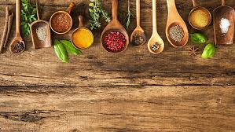
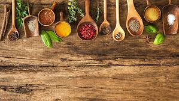
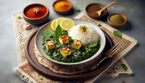
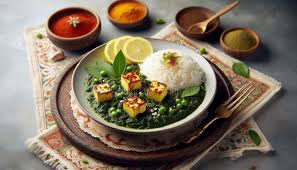

Shahi Paneer
Prep Time: 20 minutes
Cooking Time: 30 minutes
Cuisine: North Indian


Ingredients:
- 500g paneer, cubed
- 2 onions, finely chopped
- 3 tomatoes, pureed
- 1/2 cup cashews
- 2 tbsp butter
- 2 tbsp oil
- 2 tbsp cream
- 2 tsp ginger-garlic paste
- 1 tsp garam masala
- 1 tsp red chili powder
- Salt to taste
Instructions:
- Soak cashews in warm water for 15 minutes and make a paste
- Heat oil and butter in a pan, add chopped onions and sauté until golden
- Add ginger-garlic paste and sauté for 2 minutes
- Add tomato puree and cook until oil separates
- Add cashew paste and all spices, cook for 5 minutes
- Add paneer cubes and cream, simmer for 5 minutes
- Garnish with cream and serve hot with naan
Palak Paneer
Prep Time: 20 minutes
Cook Time: 30 minutes
Cuisine: North Indian
 

Ingredients:
- 500g spinach, blanched and pureed
- 200g paneer, cubed
- 2 onions, chopped
- 2 tomatoes, pureed
- 2 tbsp oil
- 1 tbsp ginger-garlic paste
- 1 tsp cumin seeds
- 1 tsp garam masala
- Salt to taste
Instructions:
- Blanch spinach and make puree
- Sauté cumin seeds and onions
- Add tomato puree and spices
- Add spinach puree and cook
- Add paneer cubes
- Serve hot with roti
Dal Makhani
Prep Time: 8 hours (soaking)
Cooking Time: 45 minutes
Cuisine: North Indian


Ingredients:
- 1 cup black urad dal
- 1/4 cup red kidney beans
- 2 onions, finely chopped
- 2 tomatoes, pureed
- 2 tbsp butter
- 2 tbsp cream
- 2 tsp ginger-garlic paste
- 1 tsp cumin seeds
- 1 tsp garam masala
- Salt to taste
Instructions:
- Soak dal and kidney beans overnight
- Pressure cook until soft (about 6-8 whistles)
- Heat butter, add cumin seeds and onions
- Add ginger-garlic paste and tomato puree
- Add cooked dal and spices, simmer for 20 minutes
- Add cream and butter, cook for 5 more minutes
- Garnish with cream and serve hot
Malai Kofta
Prep Time: 40 minutes
Cooking Time: 30 minutes
Cuisine: North Indian


Ingredients:
- For Kofta:
- 2 cups mashed potatoes
- 1 cup crumbled paneer
- 2 tbsp cornflour
- For Gravy:
- 2 cups tomato puree
- 1 cup cashew paste
- 1/2 cup cream
- 2 tbsp butter
- Spices and salt
Instructions:
- Mix kofta ingredients and shape into balls
- Deep fry koftas till golden
- Prepare gravy with tomato and cashew paste
- Add cream and spices
- Add koftas just before serving
Rajma Chawal
Prep Time: 8 hours (soaking)
Cooking Time: 45 minutes
Cuisine: North Indian


Ingredients:
- 2 cups rajma (kidney beans)
- 2 onions, chopped
- 2 tomatoes, pureed
- 2 tbsp oil
- 2 tsp ginger-garlic paste
- 1 tsp cumin seeds
- 1 tsp garam masala
- Salt to taste
- Steamed rice for serving
Instructions:
- Soak rajma overnight
- Pressure cook rajma until soft
- Prepare masala with onions and tomatoes
- Add cooked rajma and simmer
- Serve hot with rice
Pav Bhaji
Prep Time: 20 minutes
Cooking Time: 30 minutes
Cuisine: Indian


Ingredients:
- 2 cups chopped mixed vegetables (potatoes, cauliflower, peas, carrots, capsicum)
- 1 cup chopped onions
- 1/2 cup chopped tomatoes
- 2 tbsp ginger-garlic paste
- 2 tbsp Pav Bhaji masala
- 1 tsp red chili powder
- 1/2 tsp turmeric powder
- 1/4 tsp garam masala
- 2 tbsp butter
- 2 tbsp oil
- Salt to taste
- Pav (bread rolls)
- Chopped coriander leaves for garnish
- Lemon wedges for serving
Instructions:
- Heat oil and butter in a large pan or kadai. Add chopped onions and sauté until golden brown.
- Add ginger-garlic paste and sauté for a minute.
- Add chopped tomatoes and cook until they soften.
- Add all the chopped vegetables and mix well.
- Add Pav Bhaji masala, red chili powder, turmeric powder, and salt. Mix well and cook for 5 minutes.
- Add about 1 cup of water and bring it to a boil. Cover and cook until the vegetables are tender.
- Once the vegetables are cooked, mash them coarsely using a potato masher or pav bhaji masher.
- Add garam masala and mix well.
- Heat a tawa or flat pan. Cut the pavs into half horizontally and toast them with butter until golden brown.
- Serve the Pav Bhaji hot, garnished with chopped coriander leaves and a dollop of butter. Accompany with toasted pav and lemon wedges.
Veg Biryani
Prep Time: 1 hour
Cooking Time: 45 minutes
Cuisine: Indian


Ingredients:
- 2 cups basmati rice
- 500g vegetables
- 2 onions, sliced
- 2 tomatoes, chopped
- 1/2 cup yogurt
- 2 tbsp biryani masala
- Saffron strands
- Whole spices
- Ghee
Instructions:
- Marinate vegetables with yogurt and spices
- Cook rice partially with whole spices
- Layer rice and Vegetables mixture
- Add saffron milk
- Cook on dum for 20 minutes
Gulab Jamun
Prep Time: 30 minutes
Cooking Time: 20 minutes
Cuisine: Indian Dessert


Ingredients:
- 1 cup milk powder
- 1/4 cup all-purpose flour
- 1/4 tsp cardamom powder
- 2 tbsp ghee
- Milk for kneading
- Oil for deep frying
- For Sugar Syrup:
- 2 cups sugar
- 1 cup water
- 2 cardamom pods
- Few saffron strands
Instructions:
- Mix milk powder, flour, and cardamom powder
- Add ghee and knead with milk to make soft dough
- Make small balls without cracks
- Prepare sugar syrup by boiling water and sugar
- Deep fry the balls on low heat until golden
- Soak in warm sugar syrup for 30 minutes
- Serve warm or cold
Kadhi Pakora
Prep Time: 15 minutes
Cook Time: 30 minutes
Cuisine: North Indian

Ingredients:
- 2 cups yogurt
- 4 tbsp besan (gram flour)
- 1 tsp turmeric powder
- 1 inch ginger
- 2 green chilies
- For Pakoras:
- 1 cup besan
- 1 onion, chopped
- Salt and spices
Instructions:
- Whisk yogurt, besan, and spices
- Make pakora batter and deep fry pakoras
- Heat oil, add mustard seeds and curry leaves
- Add yogurt mixture and bring to boil
- Simmer for 20 minutes
- Add pakoras and cook for 5 minutes
- Serve hot with rice
Chole Bhature
Prep Time: 8 hours
Cook Time: 45 minutes
Cuisine: North Indian


Ingredients:
- 2 cups chickpeas
- 2 onions, chopped
- 2 tomatoes, chopped
- 2 tbsp oil
- 2 tsp chole masala
- For Bhature:
- 2 cups maida (all-purpose flour)
- 1/2 cup yogurt
- Oil for deep frying
Instructions:
- Soak chickpeas overnight
- Pressure cook chickpeas with tea bag
- Make masala base with onions and tomatoes
- Add chickpeas and spices, simmer
- For bhature, knead dough and rest for 2 hours
- Roll and deep fry bhature
- Serve hot with chole and onions